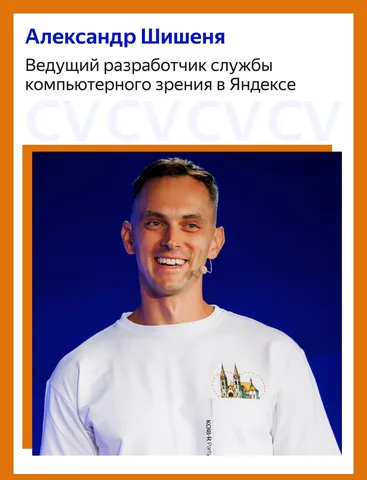
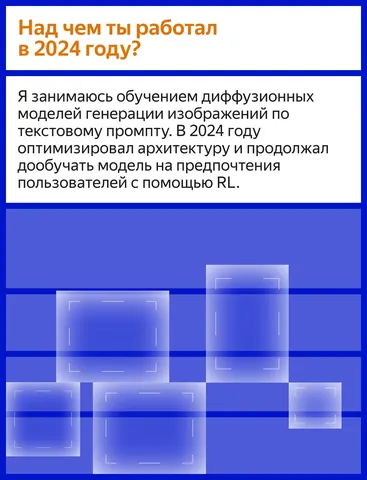
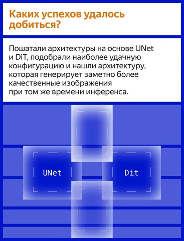
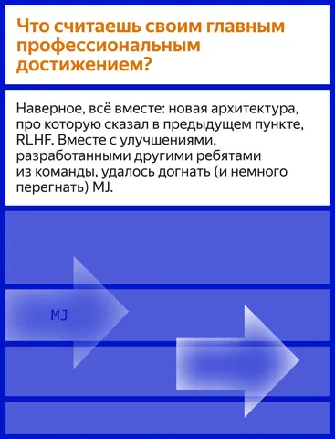
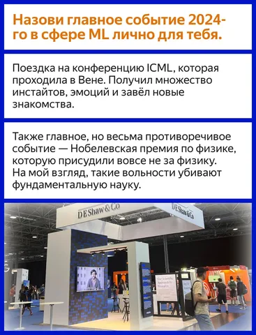
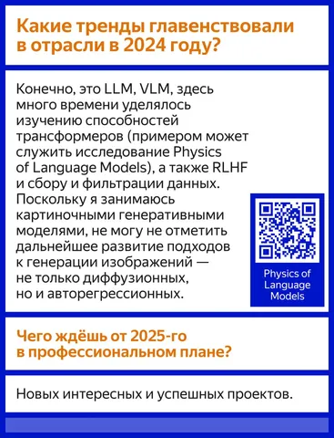

2025 год вступил в свои права, поэтому можно хорошенько осмыслить, что произошло в 2024-м. Мы попросили ML-специалистов из Яндекса рассказать, какими были для них минувшие 12 месяцев. Первый на очереди — ведущий разработчик службы компьютерного зрения Александр Шишеня. Он рассказал о своих профессиональных успехах и планах.
Александр упоминает статью Physics of Language Models.
А в канале CV Time вы сможете почитать о лучших статьях по мнению Александра. Там, кстати, ещё много интересного — подписывайтесь!
#YaMLpeople
ML Underhood
